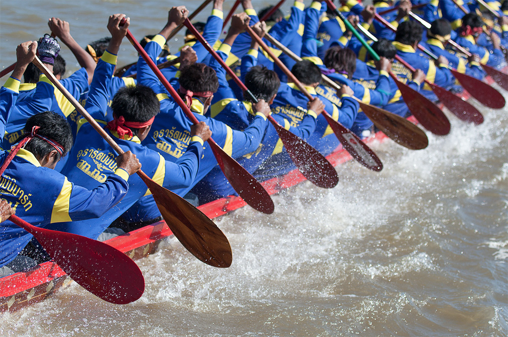
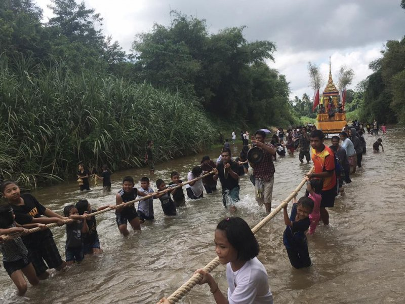

| ชาวไทยมีประเพณีที่ทำสืบทอดกันมาอย่างยาวนาน โดยประเพณีส่วนมากนั้นจะเกี่ยวข้องกับพระพุทธศาสนา รูปแบบของประเพณีต่างๆนั้นจะขึ้นอยู่กับภูมิภาคของแต่ละพื้นที่ ซึ่งประเพณีที่นำมาเสนอนี้ เป็นเพียงแค่บางส่วนที่รู้จักกันโดยทั่วไปเท่านั้น ยังมีอีกมากมายที่คนรุ่นหลังยังรักษาและสืบทอดไว้ไม่ให้หายไป.. |  |
ประเพณีภาคเหนือ
ประเพณีอุ้มพระดำน้ำ
ประเพณีอุ้มพระดำน้ำเป็นประเพณีที่มีเพียงแห่งเดียวในประเทศไทย เกิดจากความเชื่อเกี่ยวกับอภินิหารของพระพุทธรูปสำคัญคู่บ้านคู่เมือง คือ พระพุทธมหาธรรมราชา ซึ่งคนหาปลาสองสามีภรรยาทอดแหได้ที่วังเกาะระสารในบริเวณลุ่มน้ำป่าสักในเขตตัวเมืองเพชรบูรณ์ จึงนำไปไว้ที่วัดไตรภูมิ เมื่อถึงเทศกาลสารทพระพุทธรูปองค์นี้จะหายไปและชาวบ้านจะพบมาเล่นน้ำที่บริเวณที่ค้นพบเดิม ดังนั้นในเทศกาลทำบุญสารทหลังจากทำบุญเสร็จแล้วจะมีพิธีอัญเชิญ พระพุทธมหาธรรมราชาลงริ้วขบวนเรือไปสรงน้ำที่วังเกาะระสาร แต่ปัจจุบันนำมาทำพิธีที่ท่าน้ำของวัดโบสถ์ชนะมารในวันแรม ๑๕ ค่ำ เดือน ๑๐
 |
 |
ประเพณีการแข่งเรือยาว
การแข่งเรือในจังหวัดนครสวรรค์มีชื่อเสียงมาก โดยเฉพาะที่วัดเกาะหงษ์ ตำบลตะเคียนเลื่อน อำเภอเมือง จังหวัดนครสวรรค์ จะมีเรือที่มีชื่อเสียงจากต่างจังหวัดมาร่วมแข่งขันมากมาย ปัจจุบันจังหวัดเป็นผู้จัดการแข่งขันกันบริเวณสะพานเดชาติวงศ์ จัดหลังออกพรรษา ภายในเดือน
 |
 |
ประเพณีภาคกลาง
ประเพณีสู่ขวัญข้าว
เพื่อเรียกขวัญพระแม่โพสพที่ตกหล่นตามท้องนาขึ้นสู่ยุ้งฉาง บำรุงขวัญและความเชื่อของชาวนา รวมถึงการแสดงความกตัญญูต่อพระแม่โพสพ บูชาพระแม่โพสพ ป้องกันศัตรูพืชและสัตว์ทำลาย เพื่อให้ได้ผลผลิตมากในปีต่อไป
 |
 |
ประเพณีวิ่งควาย
ประเพณีวิ่งควาย เป็นประเพณีเกี่ยวกับอาชีพเกษตรกรรม ซึ่งตกทอดมาจากบรรพบุรุษจนถึงปัจจุบัน จุดมุ่งหมายเพื่อให ้ชาวบ้านได้เตรียมของไปถวายวัด ปัจจัยไทยธรรมได้พักผ่อนและได้สังสรรค์กันระหว่างชาวบ้านซึ่งเหนื่อยจากงานและให้ควายได้พักเนื่องจากต้องตรากตรำในการทำนา ปัจจุบันประเพณีวิ่งควายเป็นประเพณีของจังหวัดชลบุรี โด่งดังเป็นที่รู้จักของชาวไทยและต่างประเทศ
 |
 |
ประเพณีภาคอีสาน
ประเพณีบุญบั้งไฟ
ชาวจังหวัดยโสธรร้อยละ ๘๕ ประกอบอาชีพเกษตรกรรม ชาวยโสธรจึงจัดประเพณีบุญบั้งไฟเป็นการทำบุญประจำปีทุกปีในช่วงเดือนพฤษภาคม ซึ่งเป็นช่วงก่อนฤดูการทำนา เป็นพิธีขอฝนจากพญาแถนให้ฝนตกต้องตามฤดูกาล
 |
 |
ประเพณีแห่เทียนเข้าพรรษา
สมัยก่อนมีภิกษุได้เดินไปเหยียบย่ำข้าวกล้าในนาของชาวบ้านทำให้ได้รับความเดือดร้อน ดังนั้นพระพุทธเจ้าจึงได้อนุญาติให้ภิกษุสามเณรอยู่จำพรรษาที่วัด เป็นเวลา 3 เดือนคือในช่วงวันแรมหนึ่งค่ำเดือนแปด ถึงวันขึ้นสิบห้าค่ำเดือน 11 ซึ่งเป็นช่วงสิ้นสุดการเก็บเกี่ยวของชาวบ้านพอดีในช่วงเข้าพรรษานี้ประชาชนจะนำเทียนไปถวายพระภิกษุเพราะเชื่อว่าจะทำให้ตนเฮลียวแลาดมีไหวพริบปฏิภาณประดุจขี้ผึ้งที่ใช้ทำเทียนที่ได้จากรังผึ้ง
 |
 |
ประเพณีภาคใต้
ประเพณีลากพระ (ชักพระ)
เป็นประเพณีทำบุญในวันออกพรรษา ปฏิบัติตามความเชื่อว่า เมื่อครั้งที่พระพุทธเจ้าเสด็จไปจำพรรษา ณ สวรรค์ชั้นดาวดึงส์เพื่อโปรดพระมารดา เมื่อครบพรรษาจึงเสด็จกลับมายังโลกมนุษย์ พุทธศาสนิกชนไปรับเสด็จ แล้วอัญเชิญพระพุทธเจ้า ประทับบนบุษบกแล้วแห่แหน
/1.jpg "รายละเอียด") |
 |
ประเพณีการแข่งโพน
วัดต่าง ๆ เตรียมทำบุษบก หุ้มโพน และเริ่มการคุมโพนเพื่อเป็นการประกาศให้ชาวบ้านรู้ว่า ทางวัดจะจัดให้มีการชักพระ ต่อมามีการโต้เถียงเกี่ยวกับเสียงโพน จึงคิดเล่นสนุกสนานมากขึ้น มีการท้าพนันกันบ้างว่า ผู้ตีโพนคนใดเรี่ยวแรงดีที่สุด ลีลาท่าทางการตีดีที่สุด โพนวัดใดเสียงดังมากที่สุด จึงมีการแข่งขันตีโพนกันขึ้นในระยะ แรก ๆ เข้าใจว่า คงตีแข่งขันภายในวัดและค่อยขยายออกมาภายนอกวัด เพิ่มจำนวนโพนขึ้น จัดประเภทและมีกติกามากขึ้น การคิดเล่นสนุกสนานเหล่านี้ ทำให้มีการแข่งโพนกันอย่างกว้างขวางในระยะหลัง และกลายเป็นประเพณีท้องถิ่นที่สืบต่อกันมา ปัจจุบันการแข่งโพนเป็น กิจกรรมการละเล่นที่สำคัญของจังหวัดพัทลุง
 |
 |